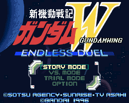
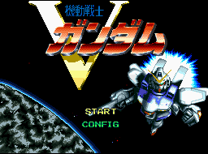
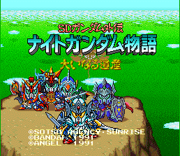
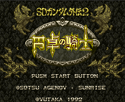
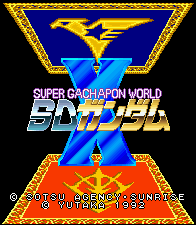

Gundam - SNES Games
![[G Gundam]](images/g_gundam.gif)
Controls
- A button: Hard Kick
- B button: Light Kick
- X button: Hard Punch
- Y button: Light Punch
- L button: [not used?]
- R button: Dash?
- Start: Pause
- Select: [not used]
You can choose from a story mode, a championship mode, a VS mode, and a team battle mode.

Controls
- A button: Punch
- B button: Punch
- X button: Punch
- Y button: Kick
- L button: Special Attack (with another button)
- R button: Special Attack (with another button)
- Start: Pause
- Select: [not used]
![[Kido Senshi Gundam F91: Formula Senki 0122]](images/gundam_f91.gif) No other information available at this time.
No other information available at this time.

Controls
- A button: Use Jet Pack
- B button: Shoot
- X button: [not used]
- Y button: Use Sword
- L button: Use Shield
- R button: [not used]
- Start: Pause
- Select: Raise/Lower Enemy Radar
You go from one location to the next fighting the enemies in that location. The enemies increase in number and
difficulty as you progress. No other information available at this time.

This game uses the Gundam characters in places of the heros and evil monsters. No other information available at this time.

Controls
- A button: Talks to People/Search
- B button: Asks People to Join Party/Search
- X button: Enter a Menu
- Y button: ???
- L button: ???
- R button: ???
- Start: Pause
- Select: ???
Gaining levels in this game is done by getting people to join your party. No other information available at this time.
![[SD Gundam Power Formation Puzzle]](images/gundam_puzzle.gif) No other information available at this time.
No other information available at this time.
![[SD Kidoo Senshi Gundam V]](images/sd_gundam1.gif)
Controls
- A button: [not used]
- B button: Face Right/Left
- X button: Change Weapon
- Y button: Fire
- L button: [not used]
- R button: [not used]
- Start: Pause
- Select: [not used?]
You can choose from three Gundam suits to battle your way through the levels. A meter charges up during gameplay
allowing you to change to different weapons. If you are hit too many times, you lose that weapon and must recharge the
meter.
![[SD Kidoo Senshi Gundam V 2]](images/gundamv2.gif)
Controls
- A button: [not used]
- B button: Face Right/Left
- X button: Change Weapon
- Y button: Fire
- L button: [not used]
- R button: [not used]
- Start: Pause
- Select: [not used?]
You can choose from three Gundam suits to battle your way through the levels. A meter charges up during gameplay
allowing you to change to different weapons. If you are hit too many times, you lose that weapon and must recharge the
meter.

No other information available at this time.
Anime Video Game Resource Center © 1998 by Luis A. Cruz